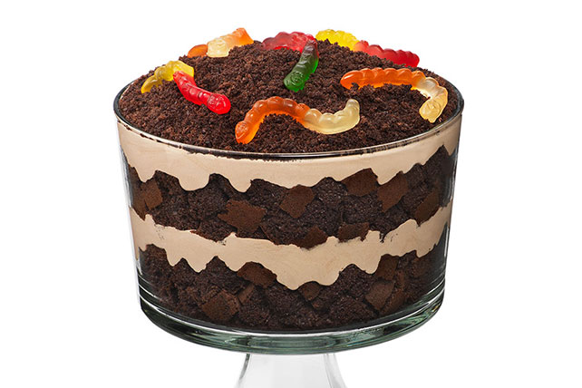

Dirt Cake

Description
This dirt cake recipe is a great conversation piece at parties — adults love it as much as children do. Garnish the flower pot cake with gummy worms; display it with a new garden trowel and artificial flowers for the full effect.
Ingredients
- 32 ounces chocolate sandwich cookies with creme filling
- 1 (8 ounce) package cream cheese, softened
- ½ cup butter, softened
- ½ cup confectioners' sugar
- 3 ½ cups milk
- 1 (12 ounce) container frozen whipped topping, thawed
- 2 (3.5 ounce) packages instant vanilla pudding mix
Directions
- Finely crush chocolate cookies in a food processor; set crumbs aside.
- Combine cream cheese, butter, and confectioner's sugar in a large bowl; beat with an electric mixer until smooth.
- Whisk milk, whipped topping, and pudding together in a separate large bowl; fold in cream cheese mixture until well combined.
- Alternately layer crushed cookies and pudding mixture in a medium flower pot, starting and ending with cookies. Chill dirt cake in the refrigerator until ready to serve; garnish as desired.